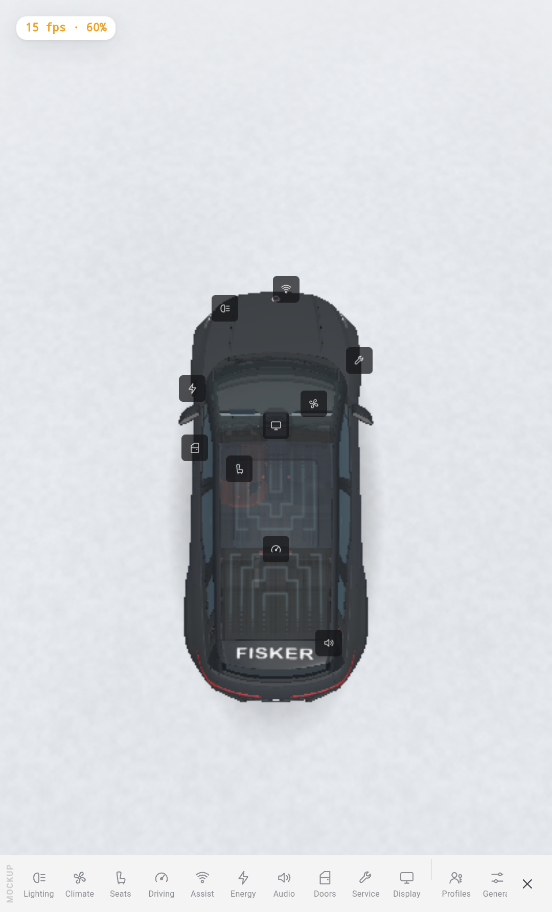
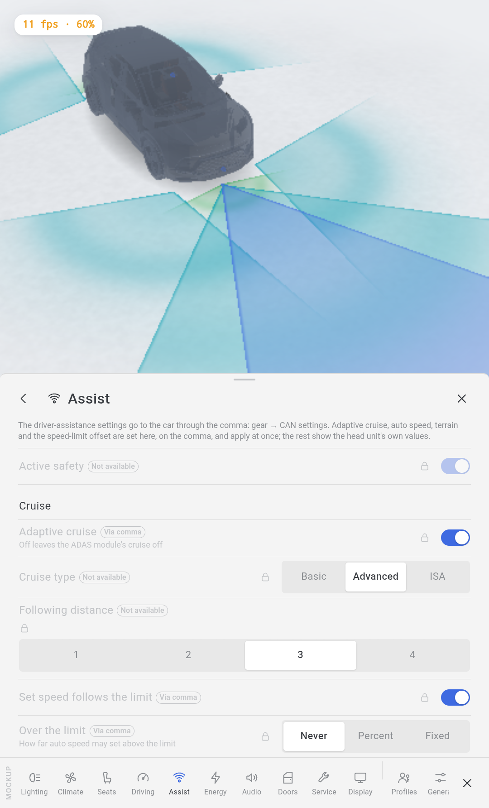
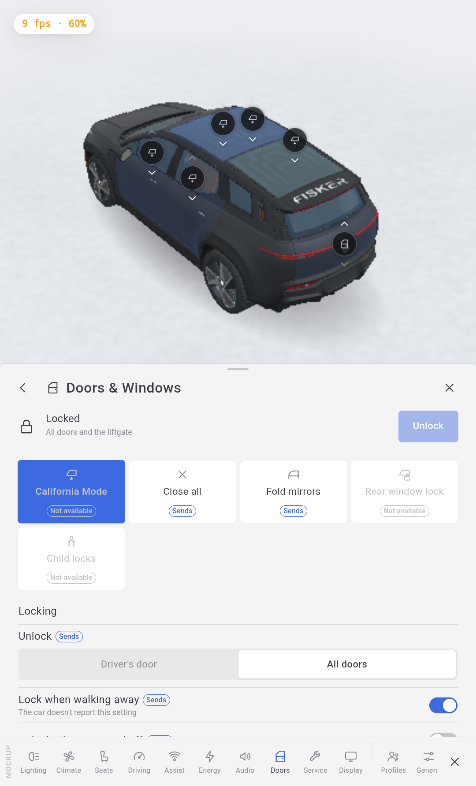
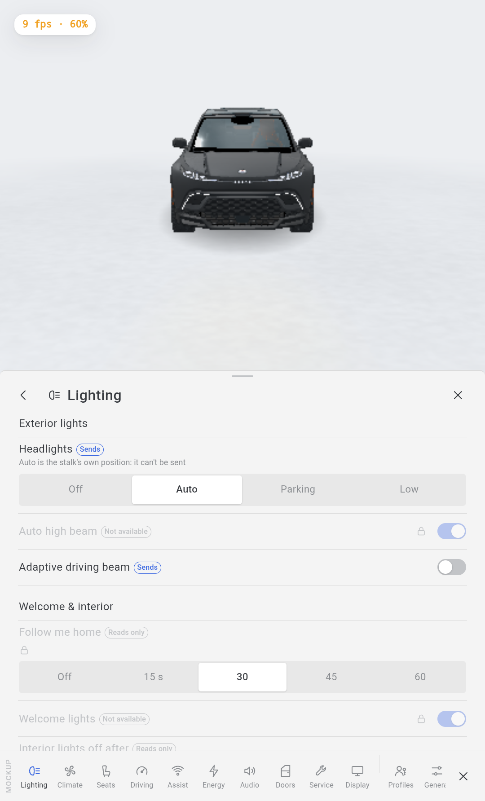
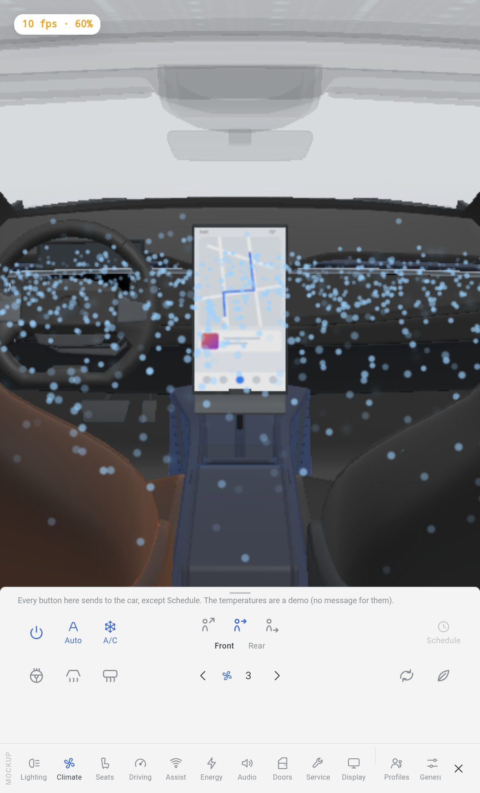
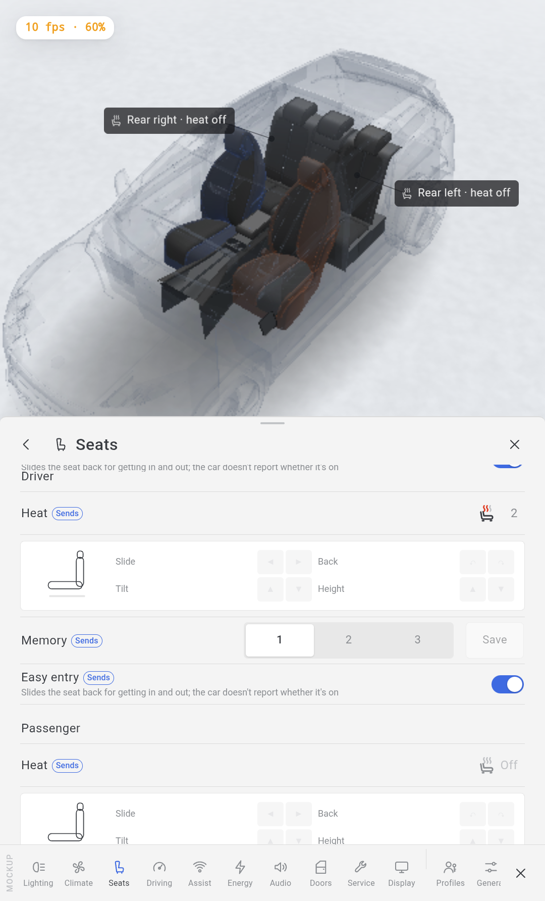
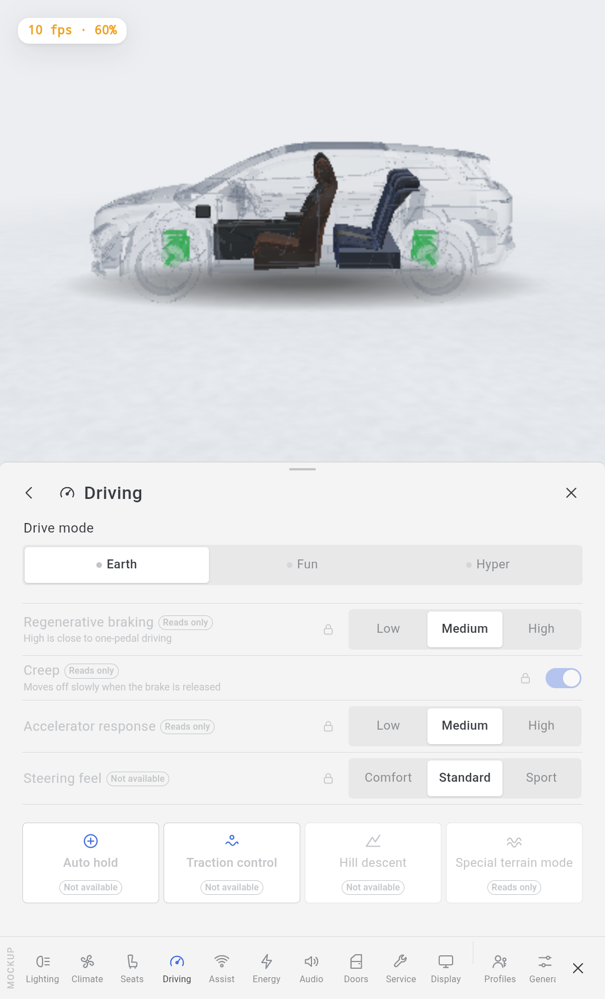
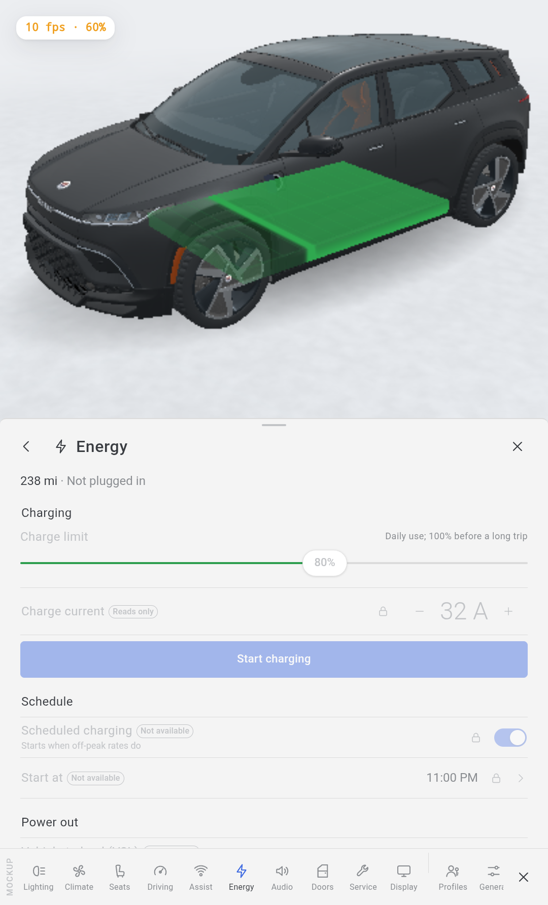
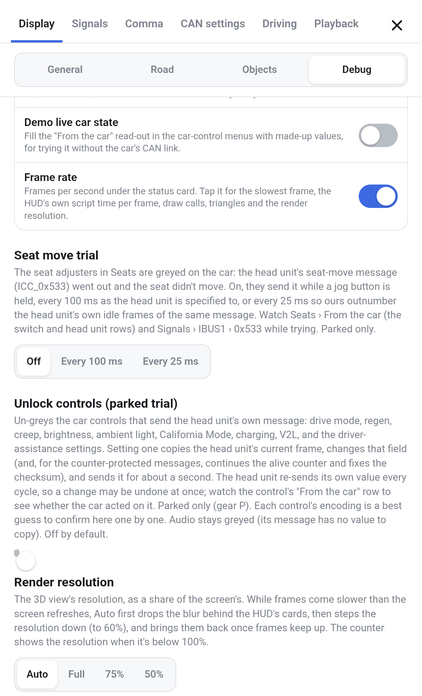

What you can control from the center screen, where each control lives, and how to read whether a control changes the car or only shows its state. Includes the two parked trials that unlock the greyed controls.



Tap the car in the 3D view. The camera lifts to a top-down view, the roof fades so the cabin shows, and a dock of categories rises along the bottom. A glowing badge sits on the car over the part each category is about (the headlight, a vent, a seat, the charge port, a window).
Tap a category to open its sheet over the lower screen; the car stays framed above it and shows the state the sheet can’t. Drag the sheet’s grab-handle to change its height. The dock stays docked, so you move between categories without closing. Tap ✕ (or tap away from the car) to close.
The dock scrolls: Lighting, Climate, Seats, Driving, Assist, Energy, Audio, Doors, Service, Display, then the system panels Connectivity, Profiles & Keys, Navigation, General, Software.
The “MOCKUP” tag on the left edge means no live car is connected — these captures are the demo state. On the car the values are live.
Every control carries a small tag that says what it does on the car. This is the single most important thing to read before you touch anything.
| Tag | What it means |
|---|---|
| Sends | You can set it. The app sends the head unit’s own message for that control and shows the car’s reply when it comes back. Example: headlights, seat heat, lock, fold mirrors. |
| Reads only | Shows the car’s current value; you can’t change it from here. Example: follow-me-home time, regen level, tyre pressures. |
| Via comma | A driver-assistance setting. It goes through the comma to the ADAS module and applies at once — so it works only when the comma is connected. Example: adaptive cruise, set-speed follows the limit. |
| Not available | Greyed, with a lock. Either the car has no message for it, or the head unit overwrites ours every cycle. Some of these can be unlocked by the parked trial (section 11). |
Controls on the car itself. Some controls aren’t in the sheet — they’re on the 3D car: drag the chevrons on each window, the sunroof and the liftgate; tap the heat chips on the rear seats; use the jog pad for seat position; read tyre pressures on the wheels.


Every button here sends to the car, except Schedule. The temperatures shown are a demo (no message for them).


These go to the car through the comma (gear → CAN settings) and apply at once; the rest show the head unit’s own values. Needs the comma connected.

| Category | What’s there |
|---|---|
| Audio | Equalizer, Sound, Radio, Announcements. Mostly greyed — one CAN frame carries every volume with nothing to copy, so the app never sends audio. It stays greyed even in the trial. |
| Service | Vehicle info, Tyre pressures Reads only (on the wheels), Help. |
| Display | HUD layout (Classic / Glance strip / Tile dash), theme, units. These change the HUD, not the car, so they’re always available. |
| Connectivity · Profiles · Navigation · General · Software | System panels. Shown with Settings → Debug → Demo car controls; informational on the HUD. |

The greyed controls are off because the head unit owns their message and re-sends its own value every cycle, or because they’re driver-assistance settings. Two switches in Settings → Display → Debug turn on a parked trial that sends them anyway. Both are off by default and work only in Park (gear P).
Off / Every 100 ms / Every 25 ms. Makes the seat adjusters send the head unit’s seat-move message
(ICC_0x533) while a jog button is held — at 100 ms as the head unit is specified, or 25 ms so
ours outnumber the head unit’s idle frames. Watch Seats → From the car and Signals → IBUS1 → 0x533.
Un-greys the controls that send the head unit’s own message: drive mode, regen, creep, brightness, ambient light, California Mode, charging, V2L, and the driver-assistance settings. Setting one copies the head unit’s current frame, changes that one field (and, for the counter-protected messages, continues the alive counter and fixes the checksum), and sends it for about a second.